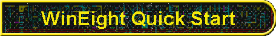

|

|
Setup
Booting FOCAL-69 from virtual paper tape is just as easy:
FontsThe wonderful ASR-33 Teletype font that you see in the screen shots was written by Mark Zanzig. To use it, youll need to visit Mark's home page and obtain your own copy, install it, and then use the WinEight Console >> Properties menu to select it. I find that it looks best if you select the bold version of the Teletype font rather than regular, but your taste may be different. You can select any font you like for the console window. It even works correctly for variable pitch fonts (that took a lot of programming!), but you may not like the way variable pitch fonts look the columns will not line up. If that bothers you, stay with fixed pitch fonts such as Terminal, FixedSys or Marks Teletype font. By the way, the default background color of the WinEight console is supposed to approximate the parchment yellow color of an old roll of ASR-33 paper. You can change that too, if you like. One final caution the Teletype font has only upper case characters (so did a real Teletype, after all), and if you accidentally type in lower case, youll see upper case characters echoed in the console window. As a rule OS/8 era programs dont understand lower case input, so if it seems like everything you type is just giving an error message and you cant see anything wrong, you probably dont have the CAPS LOCK turned on!
DevicesYou can change the peripherals on your emulated PDP-8 by selecting View >> Devices (this is perhaps not the most intuitive menu choice sorry!), which will show you a tree view of the devices currently emulated. You can add to this list by clicking the INSTALL button and then selecting from the list of devices WinEight knows how to emulate. You can connect emulated devices to external disk files by using the ATTACH and DETACH buttons on this same dialog. For some devices you can change emulation parameters (e.g. timing) by selecting the device and then clicking PROPERTIES. For example, to add an RK05 disk to your OS/8 system, you would pick View >> Devices, then click INSTALL, select "RK8E DECpack Cartridge Disk" and click OK. Back in the Device View window, you would click the + sign to the left of the RK8E to see Unit 0, Unit 1, Unit 2 and Unit 3. Select one of those units (e.g. 0), click ATTACH, and get an Open File dialog to select the disk file. If you enter the name of a file that doesnt exist, WinEight will ask if you want to create an empty image simply click OK and youre done. Of course, you still have to build your OS/8 system to support RK05 disks, but thats an exercise left to you! If that seems like too much clicking, you could also simply select File >> Open, change the "Files of Type" drop down list to "RK8E image files (*.rk5)" and then either select an existing file or enter a new name. WinEight will automatically add the RX8E/RK05 to the current configuration (if it doesnt already exist) and then attach the file to the first free RK05 unit. In the same way you could boot from an RK05 image by selecting File >> Boot instead.
RegistersYou can see the internal registers of the emulated PDP-8 by selecting View >> Registers, which adds a register view to the tool bar. The register view is read/write, so you can stop the emulation, type some address into the PC, and click Continue and emulation will resume at the new location. In the same way you can change the AC, flags, fields, etc. The register bar is a standard Windows style docking tool bar, so you can move it around to suit your taste. Unfortunately theres currently no way to examine or change emulated memory. Sorry!
PerformanceWhile I was writing WinEight, I made a conscious effort to avoid doing anything "stupid" which would ruin performance, but beyond that, no particular effort was put into tuning WinEight for maximum speed. Despite that I regularly run it on a K6/266 and I would guess that its about as fast as my real PDP-8/A. WinEight is structured as two independent threads an emulator thread, which actually executes the PDP-8 instructions, and a UI thread, which handles the menus, dialogs and the console window. Normally the emulator thread is run at a low, background, priority and the UI thread runs at the normal priority. This allows WinEight to soak up all the spare CPU cycles your system may have while still having a minimal impact on the performance of other Windows applications you may be running or on the responsiveness of its own UI. Under Windows NT this works beautifully, however the thread scheduler on Windows 9x seems to be fairly lame and frequently the system will sit idle even though the WinEight emulator thread is runnable. This tends to kill the emulated PDP-8 speed! If this becomes objectionable you can go to the CPU >> Properties menu and uncheck the box which says "Run emulation as a background task." This will improve the emulation speed quite a bit at the cost of making the rest of your system, including the WinEight UI, somewhat spastic. Again, this is only for 9x and ME systems. Under Windows NT/2000/XP the scheduling works perfectly and theres never a need to disable background emulation. |
Visit these Spare Time Gizmos
|